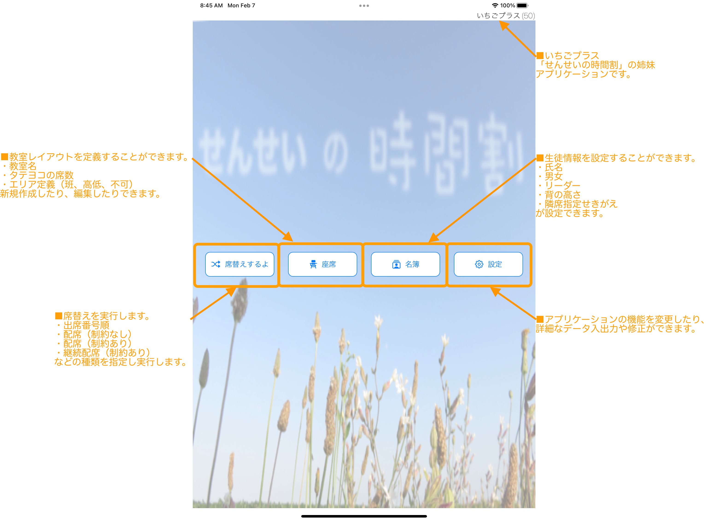

Ichigo Plus For Teacher 「いちごプラス 席替えするよ〜」について
Ichigo Plus For Teacher 「いちごプラス 席替えするよ〜」について
Ichigo Plus For Teacher 「いちごプラス 席替えするよ〜」について
Ichigo Plus For Teacher 「いちごプラス 席替えするよ〜」についてこのアプリケーションは、 班構成、男女区分、身長区分などの制約、出席番号などを入力することで、席替え時において、座席配置、班構成を自動で実行します。 小学校の先生の利用を想定しています。 先生の本来業務を邪魔されたくない、 先生の事務作業をもっと簡単・軽量にしたい、 そういった先生方の現場の声に応えることのできるアプリになりたい、 そのような願いを込めて、作成中の支援ツールです。 【主な機能】 ・席替え機能(出席番号順、単純シャッフル、制約付きシャッフル) ・印刷機能 【制限】 1.iPad縦向き画面でのご利用となります。 2.完全自動の座席配置にならない場合がございます。 3.生徒数４１名まで入力できます。 4.座席は、普通形式6x６の机配置に限定されています。 5.AirPrintに対応したプリンタへの印刷が可能です。
1.Home画面にある「席替え」をタップして、席替え画面を表示します。
2.ツールバーにある「制約席替え(最初)」をタップして、座席をシャッフルし、座席表を更新します。
3.ツールバーにある「班構成転記」をタップして、班構成情報を生徒情報へ紐付けます。
3-1.未配置の紐付けされていない生徒の属性を確認し、手動で配置を見直します。
3-2.必要に応じ、ツールバーにある「制約席替え(続き)」をタップして、直前のシャッフルで、紐付けされなかった生徒さんから、席替えを実行します。
4.メニューバーにある「印刷」をタップして、プリンタを選択し、週案を印刷します。
5.メニューバーにあるHomeをタップして、ホーム画面を表示します。
ホーム画面
席替え画面

生徒画面

設定画面

メニューバー

ツールバー

保存機能